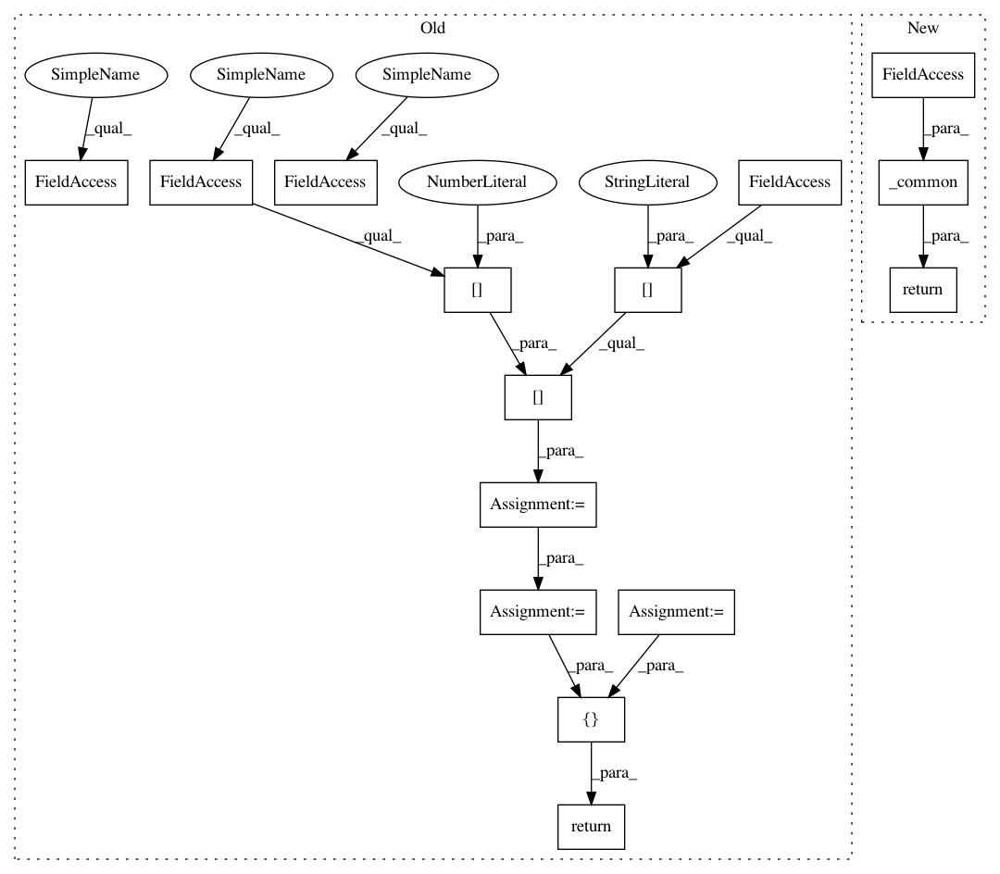

adc869e88b109af683ac94251165f96f7a406bba,onnx_tf/handlers/backend/reduce_sum_square.py,ReduceSumSquare,version_1,#Any#Any#,12
Before Change
@classmethod
def version_1(cls, node, **kwargs):
x = kwargs["tensor_dict"][node.inputs[0]]
axis = node.attrs.get("axes", list(range(len(x.get_shape().as_list()))))
keepdims = node.attrs.get("keepdims", 1) == 1
return [tf.reduce_sum(tf.square(x), axis=axis, keepdims=keepdims)]
After Change
@classmethod
def version_1(cls, node, **kwargs):
return cls._common(node, **kwargs)
@classmethod
def version_11(cls, node, **kwargs):
return cls._common(node, **kwargs)
In pattern: SUPERPATTERN
Frequency: 3
Non-data size: 15
Instances
Project Name: onnx/onnx-tensorflow
Commit Name: adc869e88b109af683ac94251165f96f7a406bba
Time: 2019-10-04
Author: wtsang@us.ibm.com
File Name: onnx_tf/handlers/backend/reduce_sum_square.py
Class Name: ReduceSumSquare
Method Name: version_1
Project Name: onnx/onnx-tensorflow
Commit Name: 81765783b9eaa051b47f628fe302419afb97f46d
Time: 2021-01-14
Author: wtsang@us.ibm.com
File Name: onnx_tf/handlers/backend/scatter_nd.py
Class Name: ScatterND
Method Name: version_11
Project Name: onnx/onnx-tensorflow
Commit Name: adc869e88b109af683ac94251165f96f7a406bba
Time: 2019-10-04
Author: wtsang@us.ibm.com
File Name: onnx_tf/handlers/backend/reduce_sum_square.py
Class Name: ReduceSumSquare
Method Name: version_1
Project Name: onnx/onnx-tensorflow
Commit Name: adc869e88b109af683ac94251165f96f7a406bba
Time: 2019-10-04
Author: wtsang@us.ibm.com
File Name: onnx_tf/handlers/backend/reduce_log_sum.py
Class Name: ReduceLogSum
Method Name: version_1